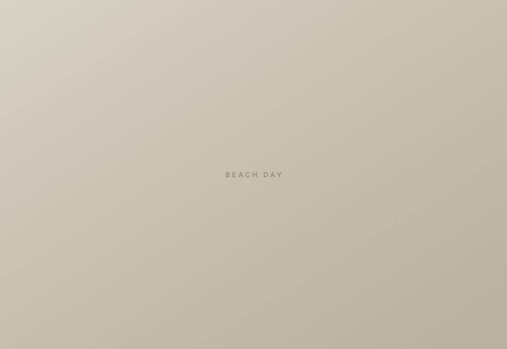
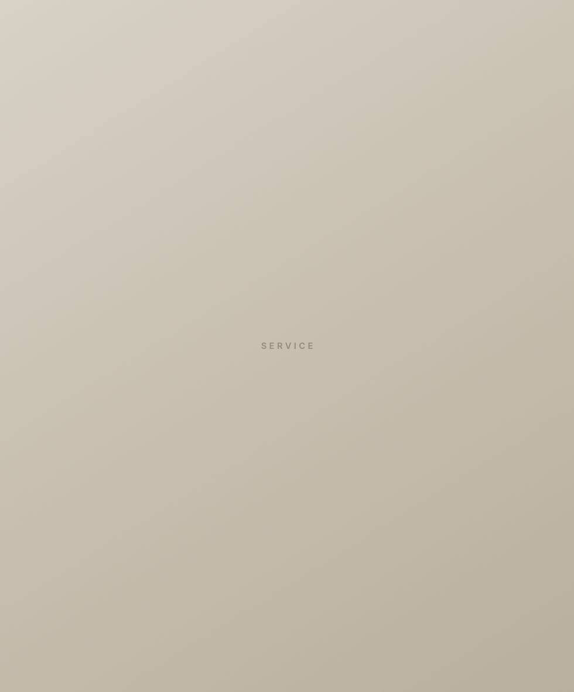
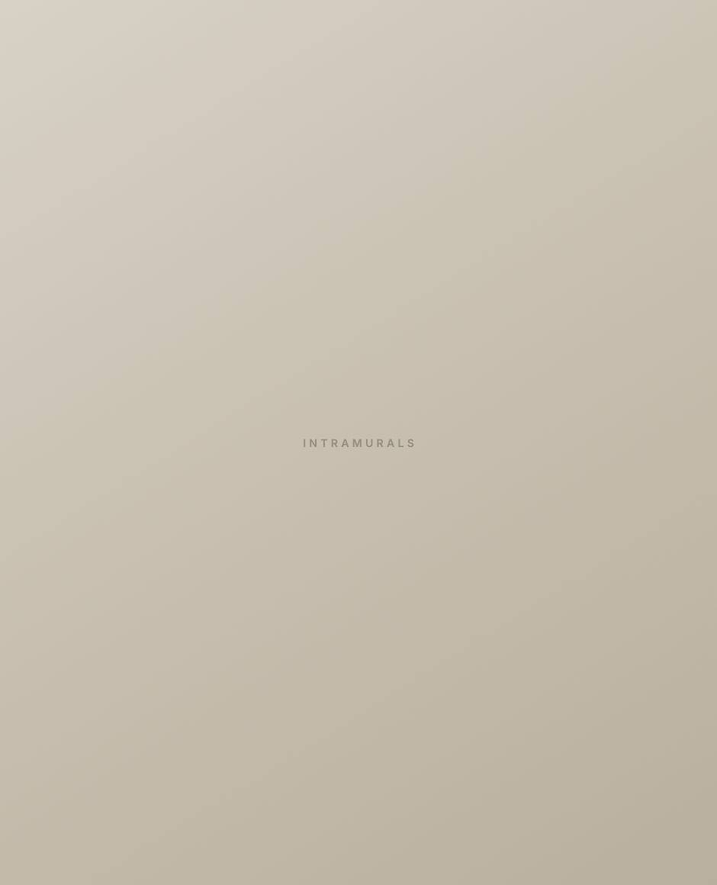
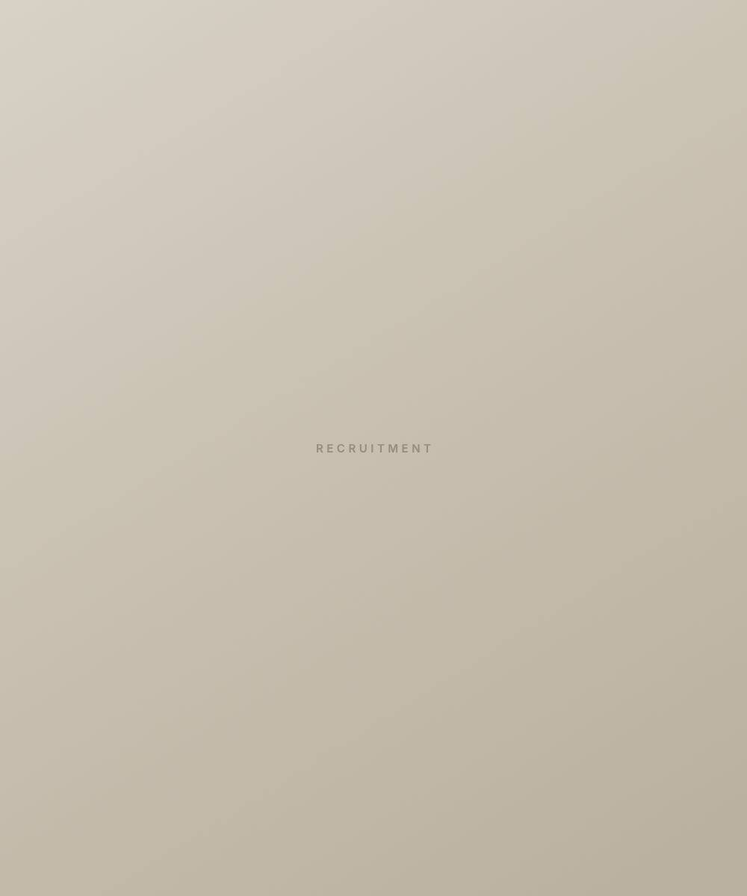

Phi Chi Theta
University of South Florida
Career preparation, leadership, and a business network before you graduate.
Graduate confident.
Three things you leave with.
Alumni, recruiters and speakers who already work where you want to. You meet them before you apply, not after.

Chair an initiative. Run an event. Manage a budget. It goes on your resume because you did it, not because you attended.

Formal, retreat, intramurals and everything between. The people who notice when you stop showing up, and who are still around after graduation.

Numbers don’t lie.
-
95%
Members placed in internships or full-time roles
-
3.60
Chapter average GPA
-
15
“25 Under 25” honorees
Where members have placed.
Internships and full-time roles taken by Zeta Rho members.
- Goldman Sachs
- Morgan Stanley
- Citi
- Wells Fargo
- PNC
- Raymond James
- Fisher Investments
- S&P Global
- KPMG
- Deloitte
- PwC
- Amazon
- Nestlé
- Unilever
- NBCUniversal
- Lockheed Martin
- Victoria’s Secret
- Formula 1
- New York Jets
- USF
Your college should look like this.







Your path starts here.
Meet the chapter and see whether PCT belongs in your college experience.